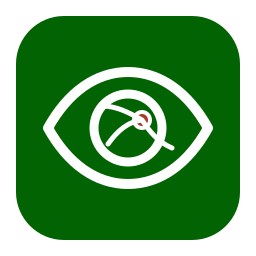
Software 0.7.0Retinal Review
Workbench
Clinician-led retinal review and dataset preparation
One retinal image enters a controlled review workflow.
The Worklist shows every admitted image with its patient and eye context, AI result, and review status.
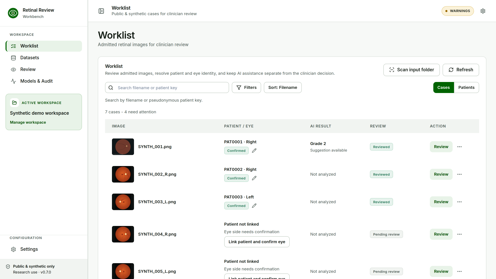
Real v0.7.0 Worklist with synthetic cases.
Every case passes three explicit confirmation boundaries.
Confirm Image
Is this the right image, patient key, and eye?
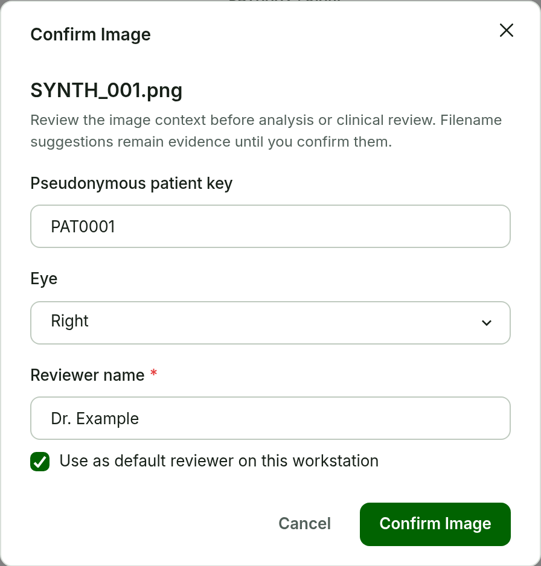
Confirm DR Grade
What is the clinician's final DR grade?
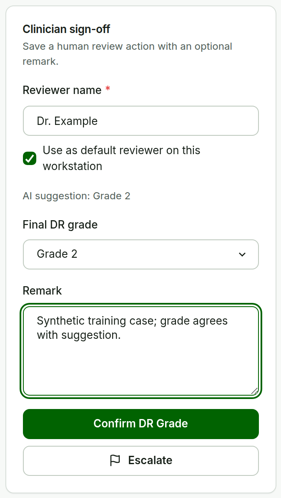
Confirm Annotation
Has the active annotation set been reviewed, at this hash?
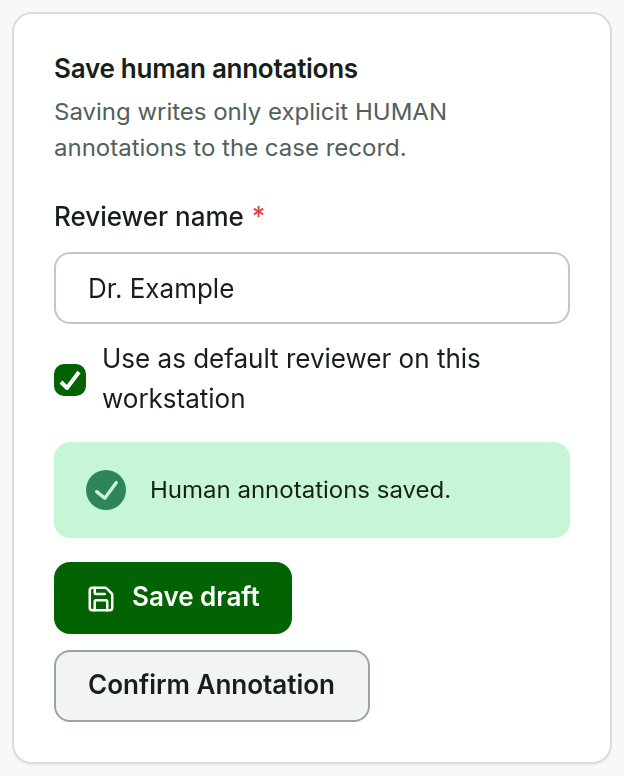
No per-lesion queue. AI suggestions never need to be accepted or rejected one by one.
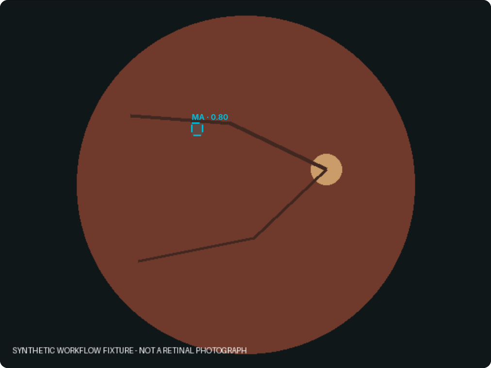
RETFound grade suggestion
Optional model evidence · a model score, not a calibrated probability
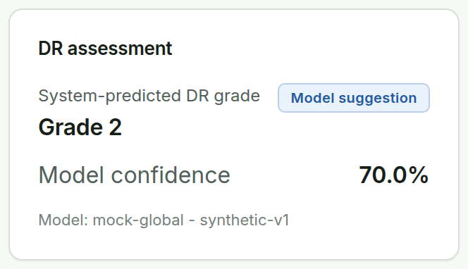
PRISM lesion ROIs
Optional overlays · an empty result never proves absence
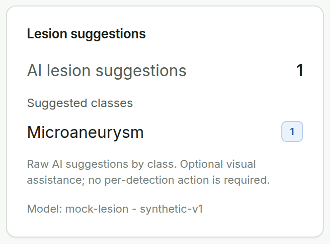
Clinician final decision
Confirm DR Grade records the human grade as the authoritative decision.
Fix one ROI. Keep the original AI evidence.
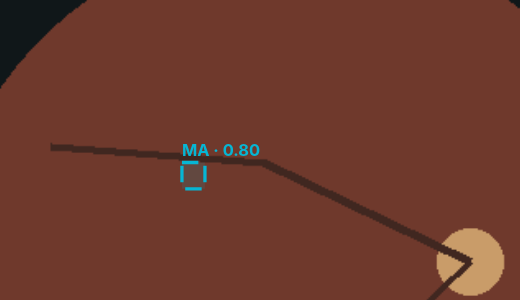
Microaneurysm · 0.80
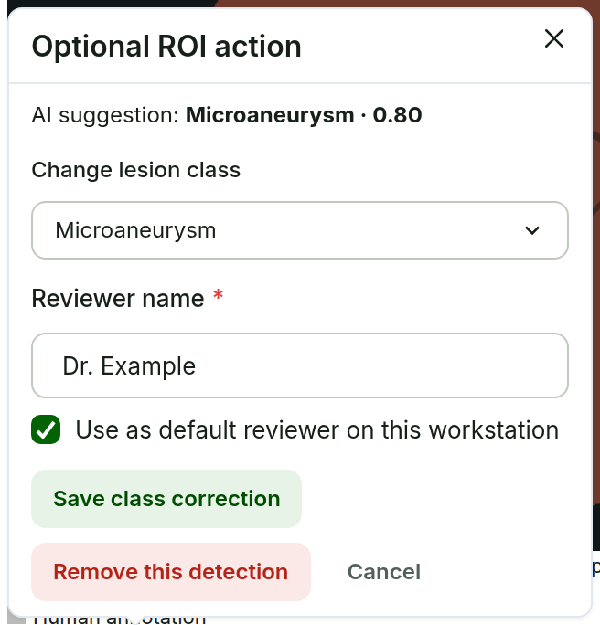
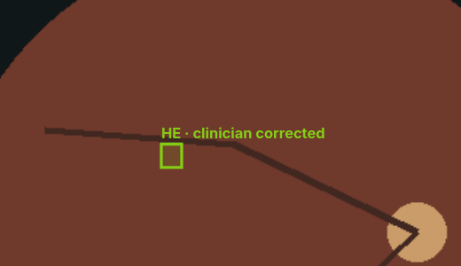
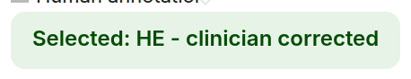
Hemorrhage · clinician corrected
Less repetitive work, without silently changing clinical state.
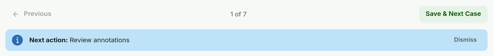
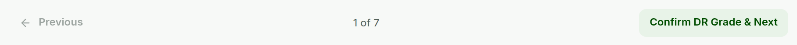
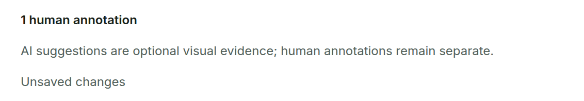
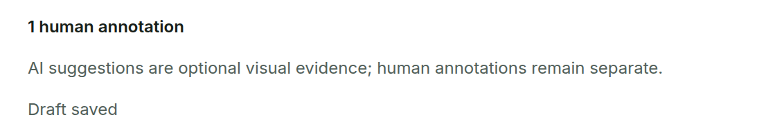
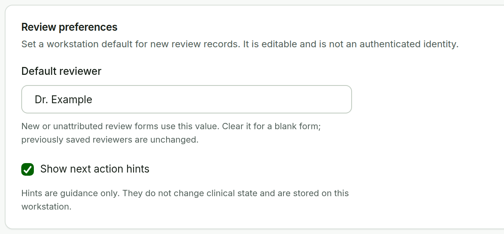
You have unsaved annotation changes. Leave this case?
Browser confirmation shown by the Annotation Editor while a draft is unsaved, saving, or failed.
Previous / Next
Moves through the case order; never saves or confirms.
Save & Next
Saves the draft or confirms the grade, then opens the next case.
Autosave draft
Unsaved changes → Draft saved, about a second after editing stops.
Default reviewer
Browser-local convenience; editable, not authentication.
Next action
Quiet guidance only; it never changes case state.
Unsaved changes guard
Leaving with unsaved edits asks first.
Classification readiness ≠ lesion annotation readiness.
DR-grade task
- Valid source provenance
- Included fundus image
- Final clinician grade, reviewer, and time
Lesion-annotation task
- Valid source provenance
- Included fundus image
- Confirm Annotation matching the active set hash
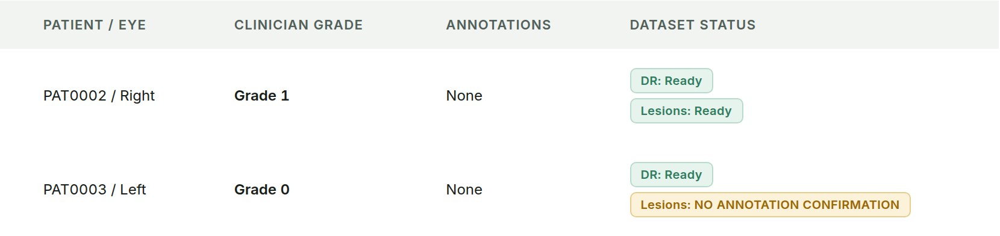
One task can be ready while the other is not. PAT0003 has a final grade but no annotation confirmation, so it exports as DR-ready only.
Every exported record traces back to its source.
Source image
Admitted once, hashed, never modified.
source SHA-256Analysis
Derived analysis image with its own identity and coordinate mapping.
analysis SHA-256Model evidence
Model ID, revision, raw output, and score kept exactly as returned.
retfound-aptos5 · prism-dr-5foldClinician decision / correction
Human grade, corrections, and removals recorded beside the AI evidence.
reviewer · time · hashDataset manifest
Task-specific readiness and provenance in the export.
s4.dataset-manifest.v2Review on the workstation. Models on the hospital GPU host.
Workstation
Review app at /app/ · local Workspace · export
Protected hospital LAN
Firewall and TLS at the boundary · no public exposure
Provider-neutral Model API
/health · /v1/models · predict routes
Hospital GPU host
CUDA · one worker · systemd
Verified RETFound + PRISM
Pinned revisions and SHA-256 · fail closed
Now let's review one case.
Switch to the workstation at 127.0.0.1:8000/app/ with the synthetic Workspace.
Retinal Review Workbench 0.7.0 · research and clinical-support proof of concept · no autonomous diagnosis or referral